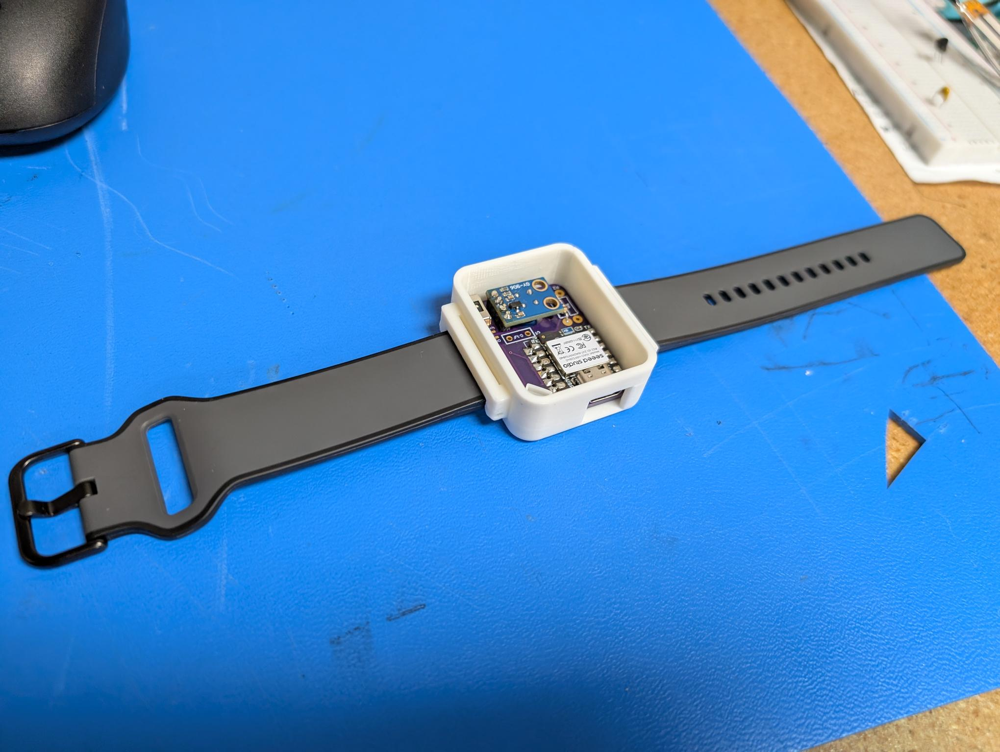
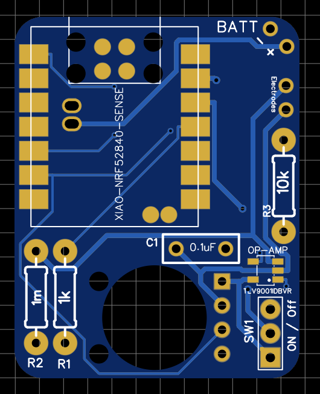
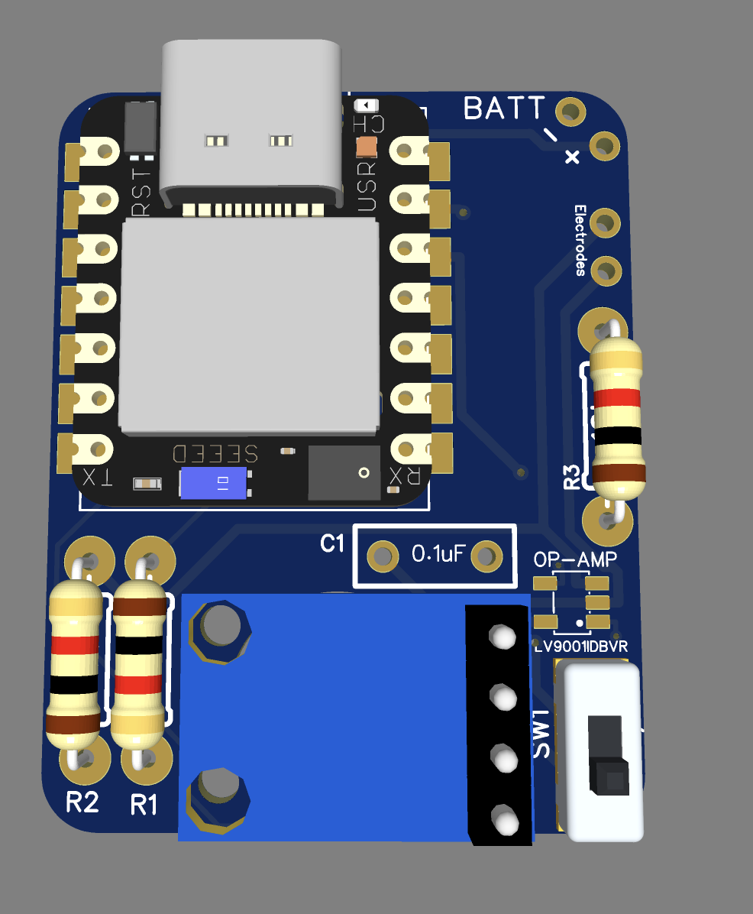
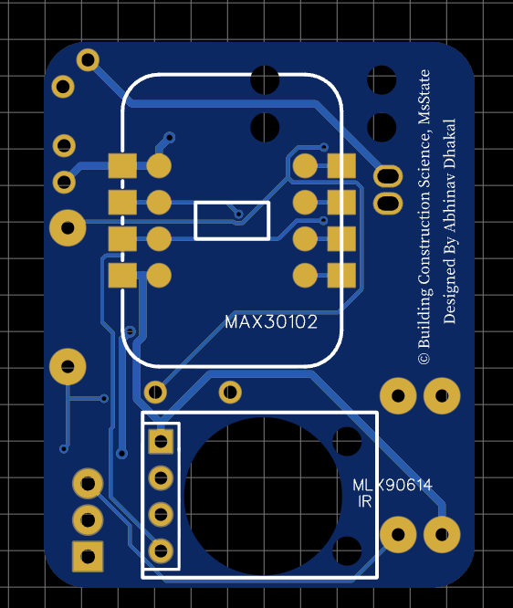
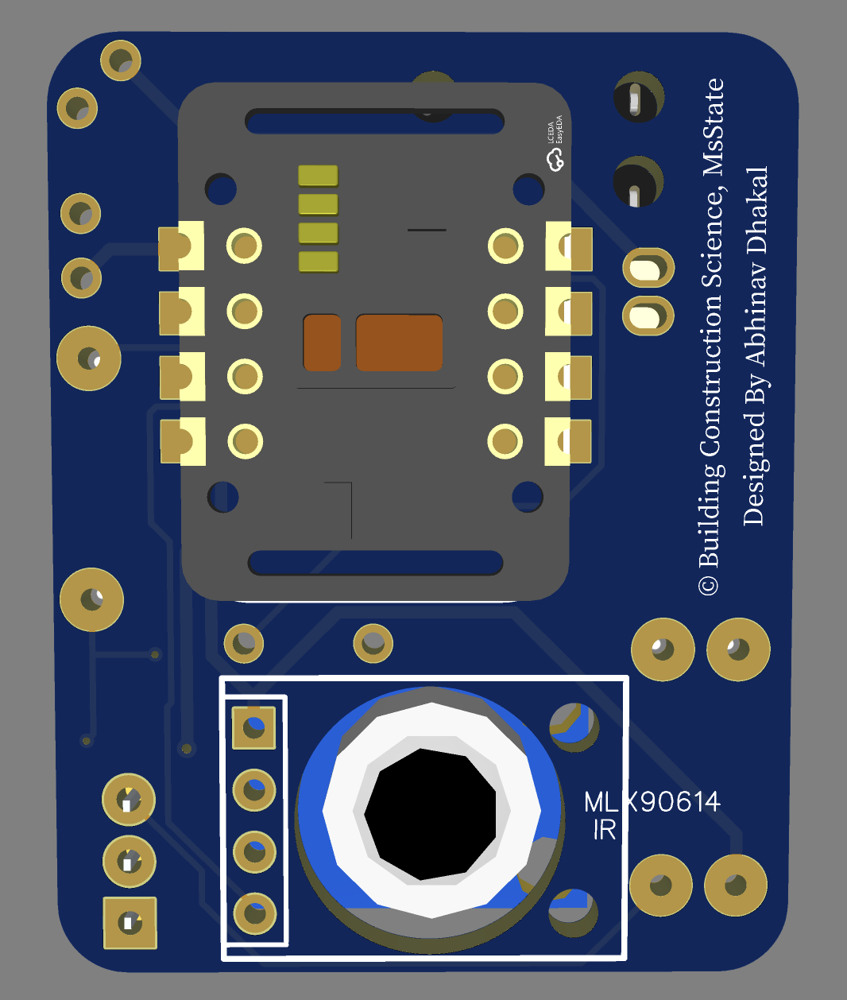
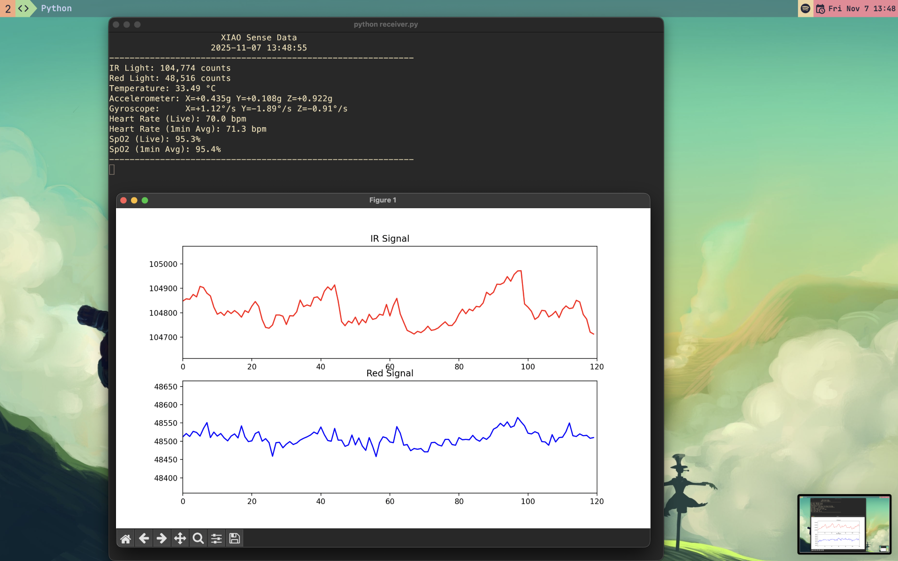

$ cat ~/projects/wirstwatch_bcs/README.md
WirstWatch_BCS

WirstWatch_BCS is a wearable vital-signs prototype focused on heart rate, SpO2, temperature, IMU data, and battery telemetry over BLE. The current focus is making the firmware-to-desktop pipeline stable end to end.
Project Snapshot
- Arduino firmware on nRF52840 hardware sends BLE telemetry for IR, Red, temperature, IMU, and battery data.
- A PyQt receiver subscribes to notifications, logs sessions, and computes HR/SpO2 from the IR/Red stream.
- The prototype is still being tuned for motion tolerance and more reliable signal quality.
PCB Views




Receiver Software

Working Notes
The prototype centers on BLE telemetry, desktop logging, and signal processing. The wrist PPG side is still best-effort, so the emphasis is on making the data path stable before refining the algorithm and enclosure fit.
Implementation Details
- Telemetry is split into fast optical samples and slower context updates so the BLE link stays responsive without overloading the receiver.
- The receiver treats session logging as a first-class path, so every run can be replayed later for HR/SpO2 tuning and debugging.
- Motion data is captured alongside PPG because wrist artifacts are a real constraint on signal quality, especially during activity.
- Battery telemetry is included so the prototype can be tested as a wearable system, not just as a sensor demo on the bench.